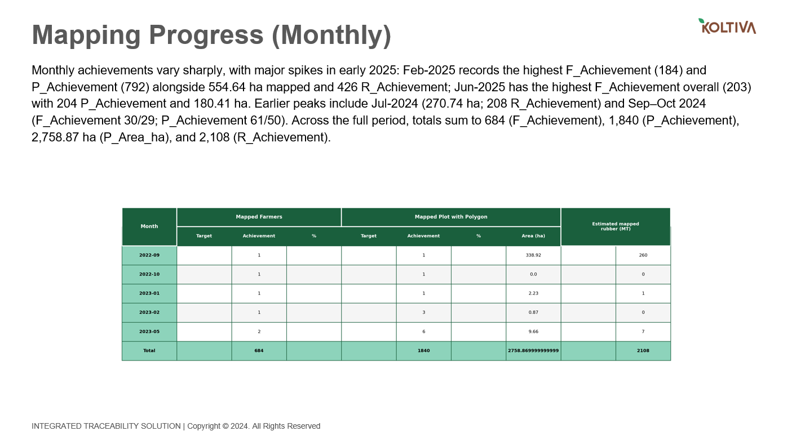
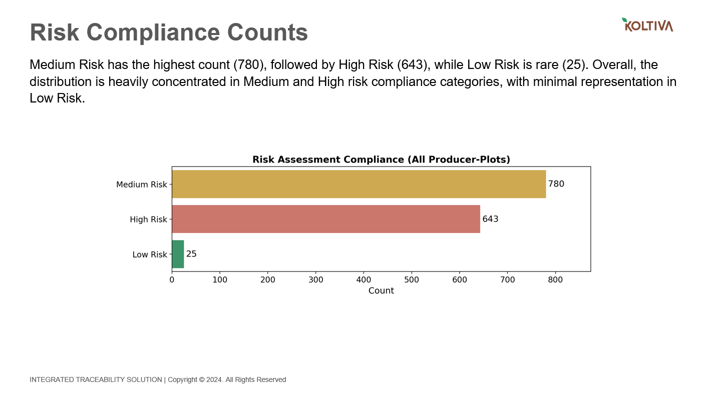
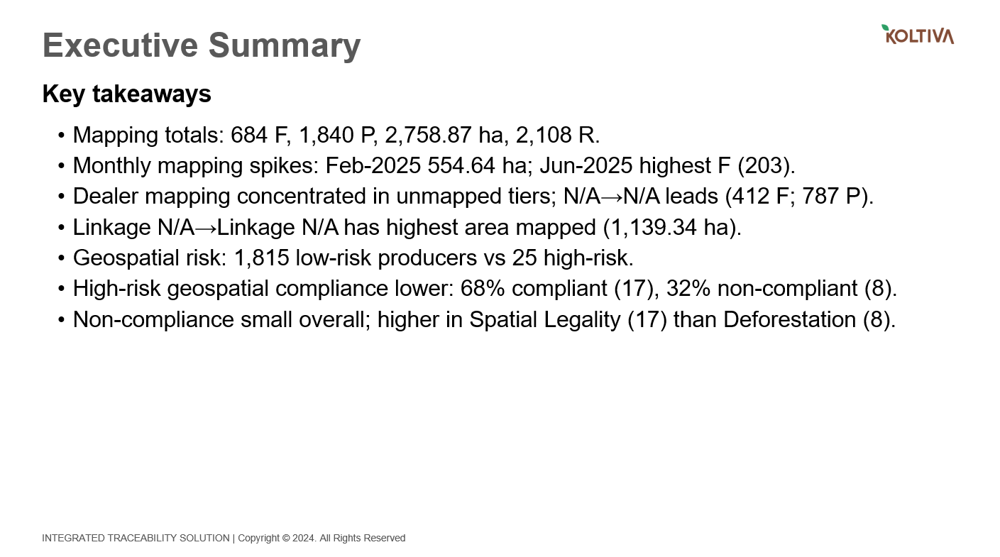

PowerPoint Slides Compliance Report Generation with AI
Project Overview
Developed an AI-driven application that automates the end-to-end generation of compliance report PowerPoint slides from custom data inputs. The solution applies robust software engineering practices and large language models (LLMs) to analyze user-provided data and transform it into structured, client-compliant presentations.
In addition, a human-in-the-loop (HITL) workflow was implemented, enabling compliance managers to refine and edit the generated PPTX through prompt-based requests. By replacing a fully manual reporting process, the application significantly improves productivity, reducing report creation time and operational overhead.
Features
- Custom compliance data is used as the source input for slide generation.
- Agentic workflow that dynamically decides the layout, slide order, and image placement based on data content.
- Validation rules to consistently produce reliable slides (e.g. detecting content overflow).
Example Slides
These are example slides generated during development and are not part of the final product.



Key Contributions
- Developed a robust data pipeline using pandas, incorporating comprehensive data validation checks and automated artifact generation to support client-expected PPTX slide creation.
- Designed and implemented an AI-driven pipeline leveraging LLM APIs and the Strands Agents Framework to automatically extract, analyze, and summarize compliance data for efficient PowerPoint slide generation.
- Ensured consistent and reliable PowerPoint slide output by utilizing structured data models with Pydantic and implementing validation scripts within the html2pptx workflow, integrating pptxgenjs, Playwright, and Sharp.
- Developed a Human-in-the-Loop (HITL) workflow, enabling compliance managers to conveniently edit PPTX files through prompt-based interactions when manual adjustments are required.
- Conducted comprehensive evaluation and observability of LLM outputs using LLM-as-a-judge methodology and integrated monitoring with Langfuse.